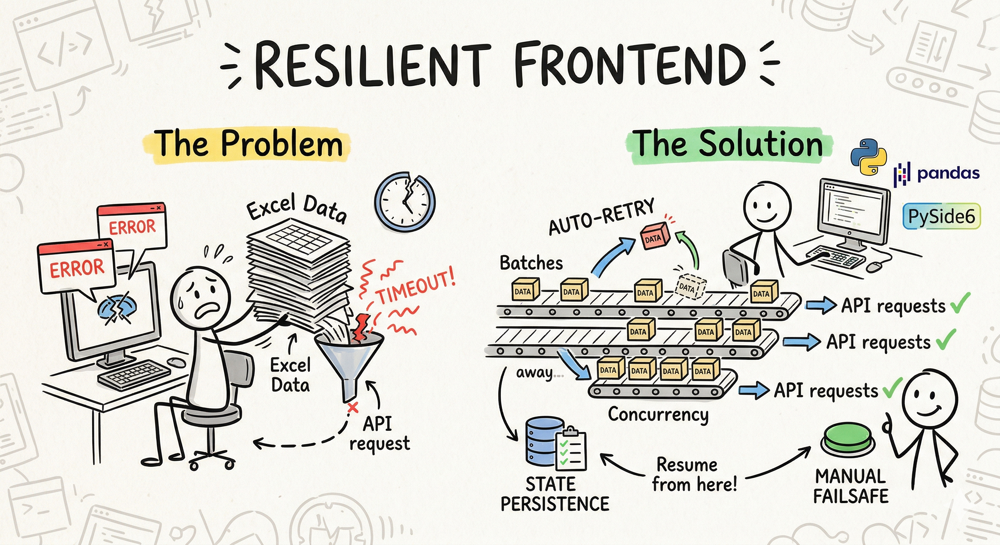

Resilient Frontend

A fault tolerant system does not prevent faults. It prevents fault from becoming failures
A Fresh Start
I got a new job and a new project to work on. It was quite simple—a workflow that the business team required to automate:
- Read Excel Sheet
- Make a GET request
- Save new data in the Excel Sheet
Along with the core logic, I needed to create a GUI for the team to use the tool. I completed the task in no time. I used Python for the business logic, PySide6 for the GUI, Pandas for Excel processing, and the Requests library for API calls. I even used PyInstaller to ship it as a standalone Windows application.
I thoroughly reviewed the UI and UX. I used highly readable Inter fonts, smooth icons, and a tiny local database for preferences. The end product was user-friendly, simple, and exactly what the team needed.
Hole In The Pot
On my machine, it worked flawlessly. The process completed in seconds. But then... the business team called. The tool wasn't working.
I had assumed that if it worked on my machine, it would work on theirs. I was wrong. The failures were:
- Timeouts: Frequent occurrences under load or when the service downscaled after "Active Hours".
- Partial Processing: Data was being processed partially, leading to reliability issues.
- Heavy Turn Around Time: The processing time was too long for larger datasets.
The Core Issue
After reading some insights from AWS developers, I identified the bottlenecks:
- Huge Payloads: Sending 80+ rows in a single request.
- No Retries: The system just gave up on the first failure.
- Manual Failsafe: No way for a human to recover without restarting everything.
The Real Engineering
To fix this, I moved away from "perfect world" assumptions and designed for failure:
- Batching: I divided the 80+ rows into batches of 5, reducing the payload size significantly.
- Concurrency: I implemented 5 concurrent requests. Combined with batching, this made retrievals faster and more reliable.
- Auto Retry: Since failures were often transient, I added automatic retries. Most failed requests succeeded on the second attempt.
- Manual Failsafe: I added a manual retry button for individual failed entries. It's rarely needed now, but it's there for a better user experience.
- State Persistence: If a power failure or crash occurs halfway through, the script now detects the partially completed Excel sheet and resumes from where it left off.
The Lesson
Stability comes from designing for failures, not avoiding it.
This saved me from debugging third-party API failures that were out of my control. The work was "simple" in theory, but implementing these real-world failsafes turned a fragile script into a stable engineering solution.